For centuries, farmers selected breeding animals by eye — the biggest cow, the strongest bull. Today, genomics lets us read an animal's DNA and predict its breeding worth before it ever produces milk or a calf. A single hair or blood sample can reveal a calf's genetic potential for milk yield, fertility, health and even hidden genetic diseases.
This guide explains DNA testing and genomic selection in simple terms, what Estimated Breeding Values (EBVs) and Genomic EBVs (GEBVs) mean, how genetic disease screening protects herds, and how computer-based breeding decisions are changing livestock farming — including what genomics means in practice for a farmer in Pakistan.
DNA Testing & Genomic Selection — In Simple Terms
One DNA sample reveals an animal's genetic potential
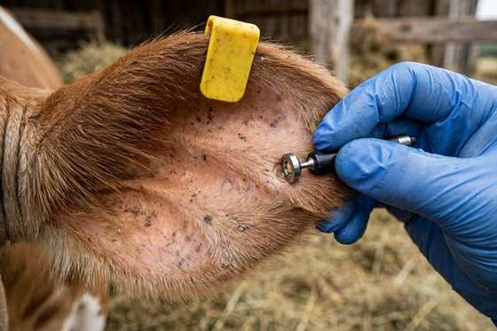
Ear tissue sample for DNA testing — quick and painless
DNA is the instruction book inside every cell of an animal. Genomic selection reads thousands of small markers (called SNPs) spread across that book and compares them with a large reference population — thousands of animals whose DNA and lifetime performance are both known. Animals sharing markers with high-performing animals are predicted to perform well too.
1
Collect a sample(A few hair roots or a small blood sample from the animal — quick, painless and cheap)
2
DNA is extracted and read(The laboratory reads tens of thousands of SNP markers from the sample)
3
Compare with the reference population(Markers are matched against animals with known milk, fertility and health records)
4
Genomic breeding values are calculated(The result is a set of predicted breeding values for milk, fat, protein, fertility, health and conformation)
5
Decisions are made early(A calf can be ranked at a few weeks old — keep the best, sell or cull the rest, years before daughters are in milk)
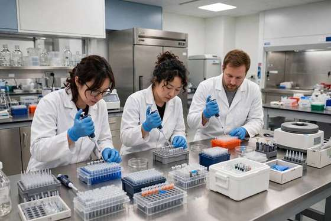
The genomics laboratory — thousands of DNA markers read per sample
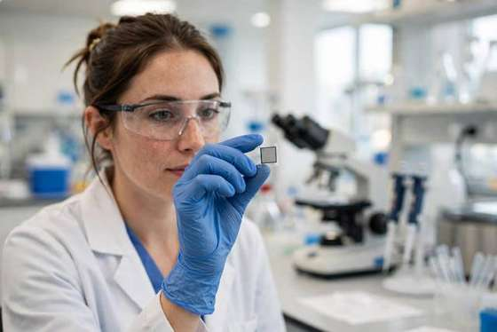
A DNA testing chip — reads thousands of markers at once
Estimated Breeding Values (EBVs) — What They Mean
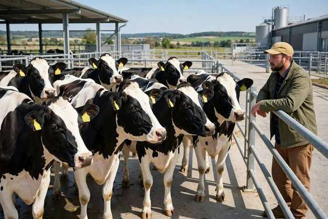
Every animal in the herd can be ranked by breeding value
An Estimated Breeding Value (EBV) is a number that predicts how much better or worse an animal's offspring will perform for a trait, compared with the average of the population. EBVs exist for milk yield, fat and protein, fertility, calving ease, longevity, somatic cell count (udder health) and body conformation.
Positive EBV: offspring are expected to perform above average for that trait (for example, +400 kg milk means daughters giving about 400 kg extra milk per lactation).
Negative EBV: offspring are expected to perform below average.
Reliability: a percentage showing how confident the estimate is — it rises as more daughters and records are added.
Indexes: many countries combine several EBVs into one total merit index, so a farmer can rank bulls with a single number.
EBVs only work when animals are compared within the same evaluation system and the same management — genetics sets the potential, but feeding and management decide how much of it is expressed.
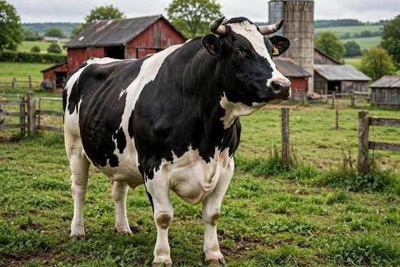
A proven bull — his daughters' records prove his breeding value
Genomic EBVs (GEBVs) — How Genomics Improves Accuracy
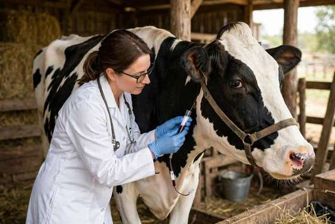
A blood or hair sample is all genomics needs
A Genomic EBV (GEBV) combines three sources of information: the animal's pedigree, its own and relatives' performance records, and its DNA marker profile. The DNA adds information that pedigree alone cannot give — it shows exactly which genes the animal inherited, rather than the average of its parents.
1
Higher accuracy at a young age(A young bull's GEBV is far more reliable than a pedigree-only estimate — close to a proven bull's value)
2
Shorter generation interval(Good bulls can be used at 1–2 years old instead of waiting 5–6 years for progeny test results)
3
Faster genetic progress(More genetic gain per year, because the best animals are identified and used earlier)
4
Better selection of females(Heifers can be ranked before first calving, so only the best become mothers of the next generation)
5
New traits become selectable(Feed efficiency, methane output and disease resistance — traits that are hard or expensive to measure — can be selected through DNA)
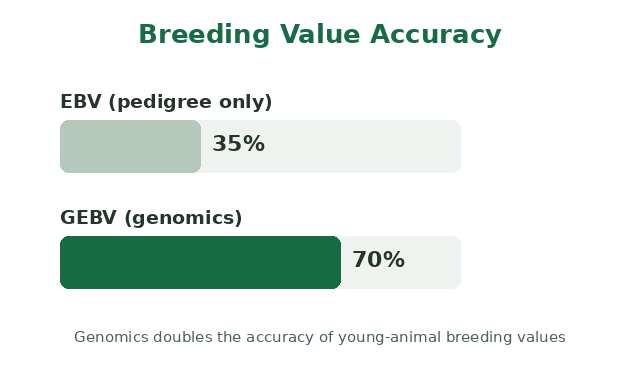
Genomics doubles breeding value accuracy for young animals
Genetic Disease Screening
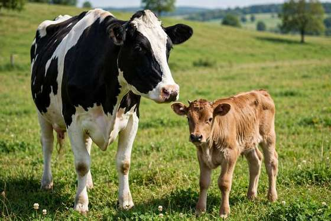
Carriers look perfectly healthy — only DNA testing reveals them
Some inherited diseases are caused by a single recessive gene. Carriers look completely healthy, but when two carriers are mated, each calf has a 25 percent chance of being affected. Well-known examples in Holstein cattle include BLAD (bovine leukocyte adhesion deficiency, causing weak immunity and early death) and CVM (complex vertebral malformation, causing stillbirth and deformity).
DNA screening identifies carriers before breeding. The rule is simple: never mate carrier to carrier. A carrier bull can still be used safely on tested non-carrier cows. Over time, screening and careful mating reduce the defective gene in the population without losing good genetics. Breed associations in many countries publish carrier status for all tested bulls.
Field rule: before buying semen or a bull, check its genetic defect status. One untested mating can produce a dead or deformed calf — and the cost of the test is far less than the cost of one lost calf.
AI-Based Livestock Breeding Decisions
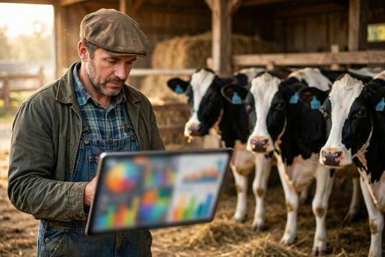
Data-driven mating decisions on the farmHerd records and pedigree data guide every mating
Modern breeding software combines genomic values, pedigree, inbreeding coefficients, carrier status and herd records to recommend the best mating for every cow. The farmer enters his goals — more milk, better fertility, stronger udders — and the program ranks the available bulls for each individual cow.
Corrective mating: a cow weak in one trait is matched with a bull strong in that trait.
Inbreeding control: the program blocks matings between close relatives and keeps the herd's inbreeding level low.
Carrier avoidance: carrier-to-carrier matings are automatically excluded.
Economics: some programs rank matings by expected profit, not just by milk — balancing yield, health, fertility and feed costs.
These tools do not replace the farmer's judgement — they give him better information to judge with. A good eye for cattle still matters; genomics simply adds what the eye cannot see.
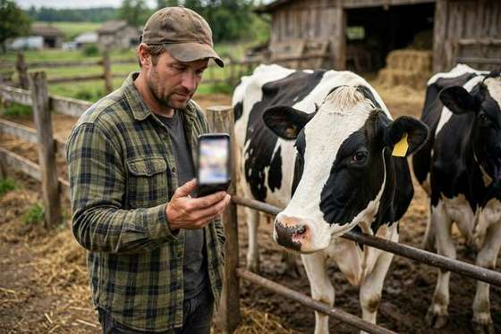
Breeding data on the phone — genomics in the farmer's pocket
What Genomics Means for a Pakistani Farmer
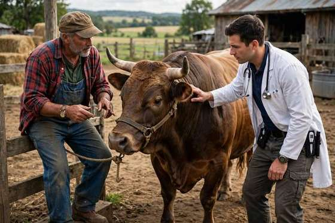
Farmer and veterinarian selecting the best bulls by merit
Genomics may sound like a laboratory science, but its benefits reach the smallest farm in Punjab:
Choose proven semen: buy semen from genomically tested bulls with published EBVs — ask the supplier for the bull's proof instead of choosing by price alone.
Keep records: milk yield, calving dates and health events are the raw material of genetic progress — even a notebook is enough to start.
Test valuable animals: DNA testing services are available through veterinary universities and breeding companies, and costs continue to fall.
Protect indigenous breeds: genomics helps conserve and improve Sahiwal, Cholistani and other local breeds by identifying their best animals scientifically.
Avoid inbreeding: in small herds, using the same bull for years causes inbreeding — rotate bulls or use AI from different sires.
⚠ Important Tips:
Genetics is a long game — gains build over generations, not overnight.
Never select on one trait alone — a bull high for milk but poor for fertility will cost more than he earns.
Good feeding and management are still essential — the best genes cannot express themselves in a hungry cow.
Always verify a bull's proof and defect status with the supplier before buying semen.
Frequently Asked Questions
What is genomic selection in cattle breeding?
Genomic selection uses DNA information from thousands of markers across the genome to predict an animal's genetic merit at a young age. A DNA sample from blood or hair is compared with a reference population of animals with known performance, giving breeding values long before the animal has daughters in milk.
What is an Estimated Breeding Value (EBV)?
An Estimated Breeding Value (EBV) is a number that predicts how much better or worse an animal's offspring will perform for a trait compared with the herd average. A bull with a milk EBV of +500 kg is expected to sire daughters producing about 500 kg more milk per lactation than average.
How are GEBVs different from traditional EBVs?
A Genomic EBV (GEBV) adds DNA marker information to pedigree and performance records. This raises the reliability of the breeding value, especially for young animals with no daughters yet, and shortens the generation interval — good bulls can be used years earlier than with traditional progeny testing.
What is genetic disease screening in livestock?
Genetic disease screening tests animals for harmful recessive genes such as BLAD and CVM in Holsteins. Carriers look healthy, but mating two carriers gives a 25 percent chance of an affected calf. Screening lets breeders avoid carrier-to-carrier matings and gradually remove the defect from the herd.
How does AI software help breeding decisions?
Breeding software combines genomic values, pedigree, inbreeding levels and herd records to suggest the best mating for each cow. It matches strengths to weaknesses, avoids inbreeding and carrier-to-carrier matings, and ranks bulls for the traits the farmer wants most — milk, fertility, health or conformation.
Can a small farmer in Pakistan use genomics?
Yes — a small farmer does not need his own laboratory. He can buy semen from genomically tested bulls, keep simple breeding and milk records, and ask his veterinarian about DNA testing services. The cost of genomic testing keeps falling, and even choosing proven semen is already using genomics.
What does a positive EBV for milk mean?
A positive milk EBV means the animal's daughters are expected to produce more milk than the average of the population. For example, a bull with a milk EBV of +400 kg should sire daughters giving about 400 kg extra milk per lactation, if they are fed and managed the same as others.
جینومکس سے مویشیوں کی نسل کیسے بہتر ہوتی ہے؟
جینومکس میں جانور کے ڈی این اے کی جانچ سے پہلے ہی معلوم ہو جاتا ہے کہ اس کی نسل دودھ، صحت اور زرخیزی میں کیسی ہوگی۔ اس سے کسان اچھے سانڈھ کا انتخاب کر سکتا ہے، موروثی بیماریوں سے بچ سکتا ہے اور ہر نسل میں دودھ کی پیداوار بڑھا سکتا ہے۔
Key Takeaway
Genomics has changed breeding from guessing to measuring. DNA testing, EBVs and GEBVs let farmers identify the best animals young, avoid inherited diseases, control inbreeding and make every mating count. The technology keeps getting cheaper — and the farmers who learn it now will lead the herds of the future. Follow current breeding authority guidance and always verify bull proofs before buying semen.